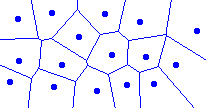

"I found the animation very entertaining"
- Steven Fortune
This page briefly describes what a Voronoi diagram is and provides an interactive demonstration of how these can be created using Fortune's plain-sweep algorithm.
The goal of the page is to give you an intuitive understanding of how Fortune's algorithm works and how Voronoi diagrams look, so if you have never heard of these diagrams we suggest that you follow some of the links given to get a better understanding of the theoretical aspects of Voronoi diagrams.
A starting point might be Voronoi.com, which features a lot of Voronoi related stuff.
The applet located on this page was created in context with the course "Computational Geometry" held by Pawel Winter during the spring of 2000 at the department of computer science at the university of Copenhagen (DIKU).
Imagine you have a map over a city with n cell phone masts. A cell phone always connects to the closest mast, so you'd like to split up the city in zones, where each zone has exactly one cell phone mast and each location inside such a zone is closest to the cell phone mast found in the same zone.
The result of such a partitioning is often referred to as a Voronoi diagram and can be created in O(n log n) time by various algorithms. This is also a lower limit.
In the above example we have transformed the problem of finding the closest mast to the problem of finding the zone in which we are located (also known as the point location problem). This can be determined in logarithmic time instead of the linear time, which would be required for finding the nearest mast if no preprocessing was done. Naturally you'll need to query the Voronoi diagram more than once to make up for this preprocessing time.
Though given a Voronoi diagram we can solve a lot of other geometrical problems such as convex hull and Delaunay triangulation.
Our implementation is based on the explanation given in the book entitled Computational Geometry: Algorithms and Applications.
An online explanation of the details in Fortune's algorithm is carefully described by Èuk Roman and can be found at his page.
It should be emphasized that our implementation does not run in O(n log n). We only wanted to visualize the algorithm and all structures have been made as simple as possible to avoid unneccessary complexity. A non-visual implementation, done in C, can be found at this page.
The source is available at GitHub. Unfortunately we managed to delete the source, but thanks to Jad (a JAVA decompiler) we were able to get it back, but all comments and local variable names were lost. Furthermore this has resulted in a not 100% strict coding style, since most of it was produced by Jad. This is also our first program made in Java.
You control the program with your mouse. At any time you can click on the right side of the sweep-line to add a point. Below follows an explanation of the various buttons and checkboxes.
| Buttons | Checkboxes |
|---|---|
|
|
If you draw a perfect circle of points all the zones should meet in the center of this circle. Now try to spoil this feature by adding a point in the middle of the circle. Even if you didn't succeed in making the circle perfect then try it anyway.
Webmaster - Created: May 2, 2000